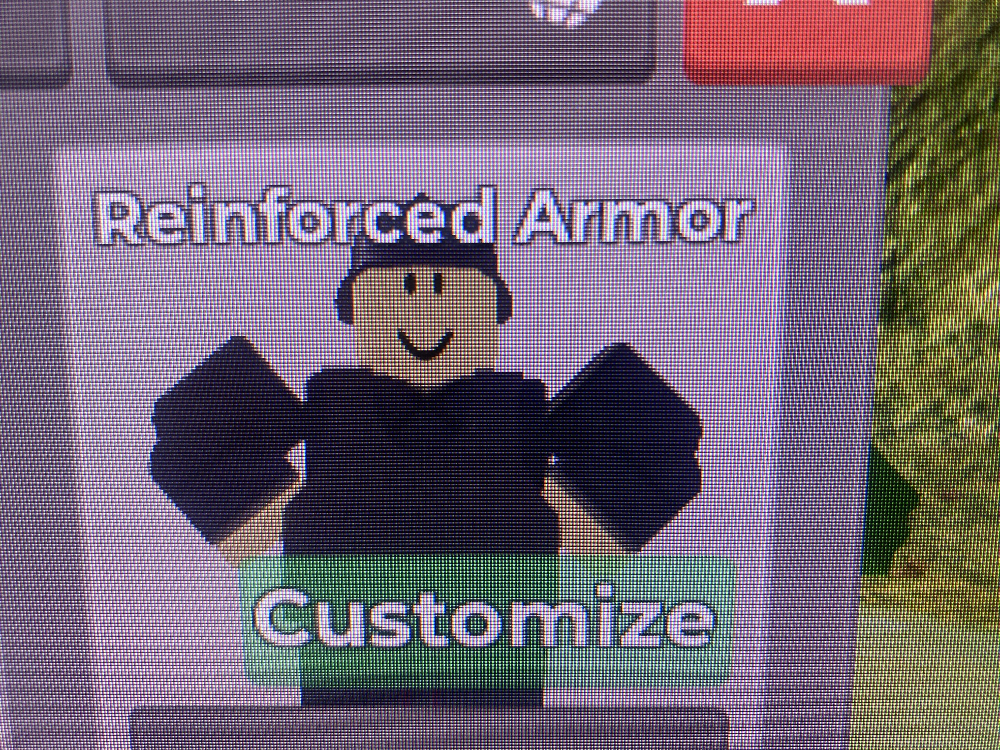
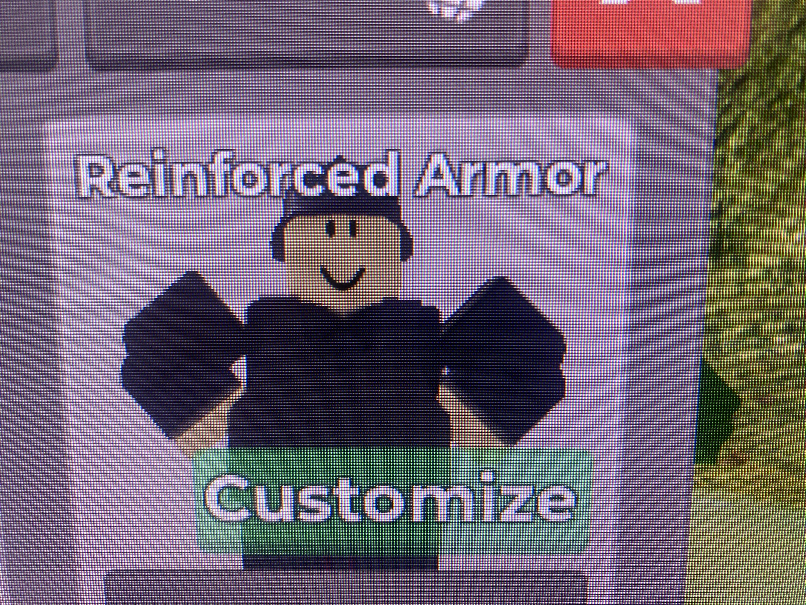
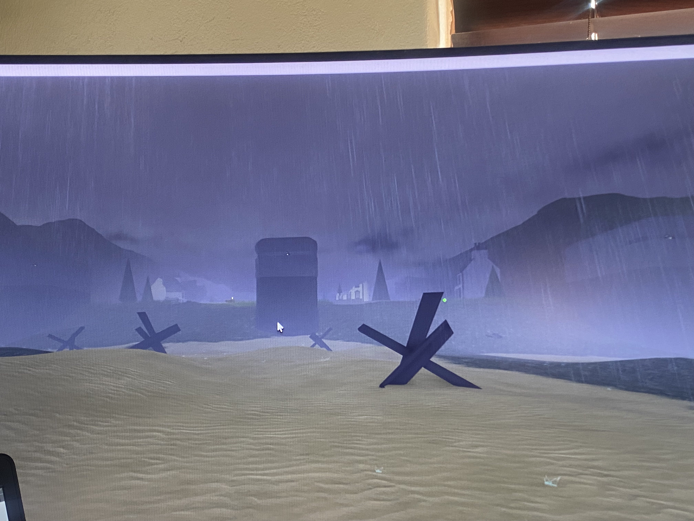
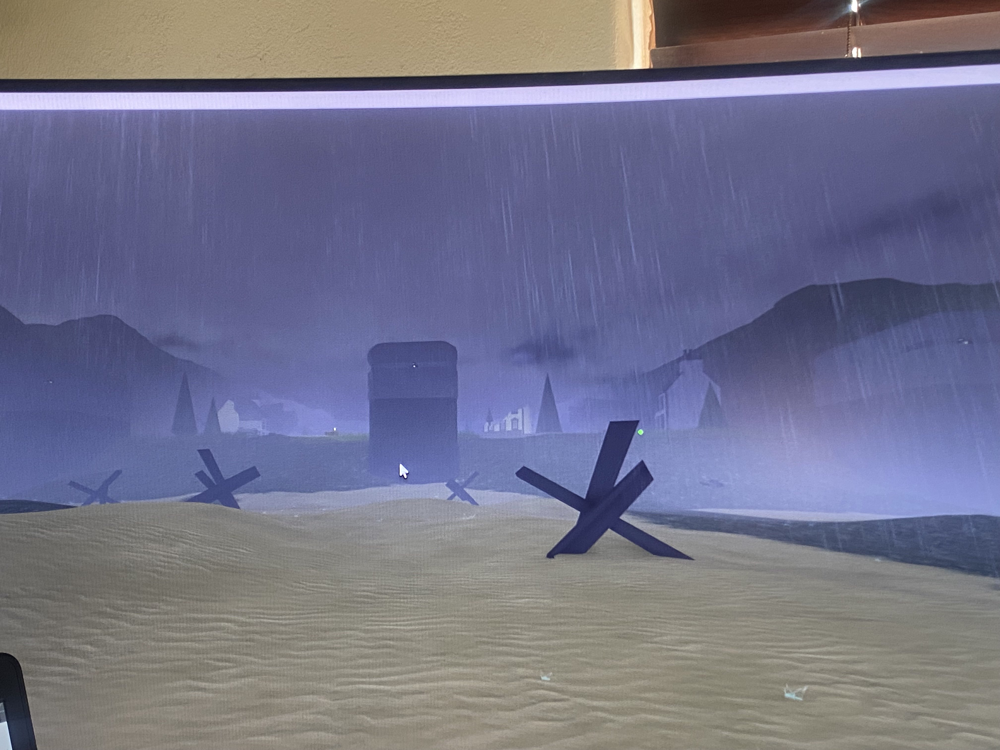
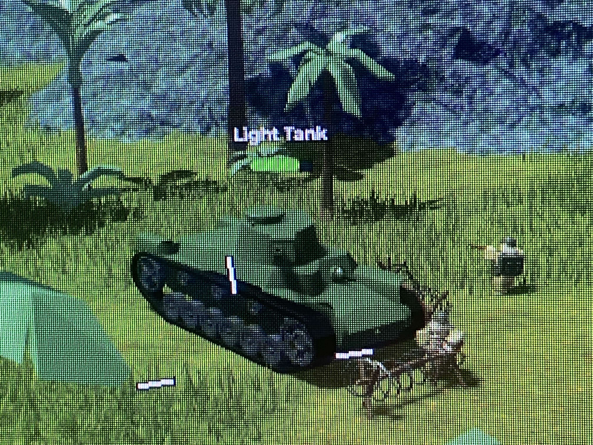
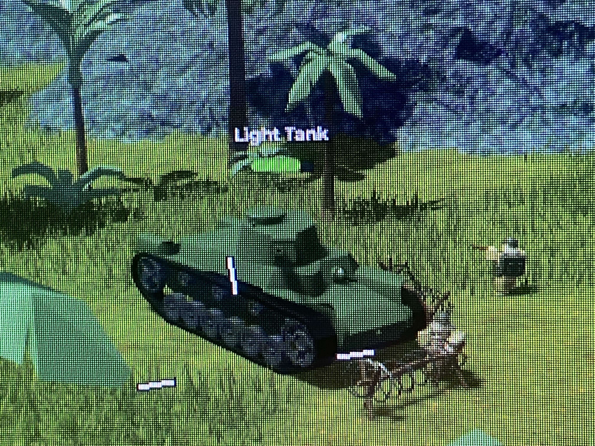

Introduction
Welcome to the tutorial on how to defeat [Game Name] on Roblox! This game can be tricky, but with the right strategy, you can become a master in no time. Follow the steps below, and you’ll be on your way to victory!
Steps to Defeat the Game
World War 1
The fastest way to leave world war one is to grind the trooper and melee until you have the DB shotgun and reinforced armor
After you buy those you will go to the fortress at the end and grind the commando until you have enough to buy WW2 and before you go there save up and buy the officer armor

 


World War 2
Once you reach WW2 the fastest way to leave is to first grind the npc’s in the 3 pillars an the soilders on the beach until you have the Tommy gun and infantry armor Pro tip: start grinding exposives here aswell until you reach the panzerfaust rocket launcher After unlocking the tommy gun and infantry armor grind the machine gunners in thepillars and the soilder on the beach until you unlock the Remington 870 Then you will go to the end of the map and grind the elite infantry until you have enough for the pacific front.


 

World World 2 Pacific Front
Once you reach this era the fisrt thing you want to do is farm the npc and the bunker for money to buy the bazooka rocket launcher Then once you have the bazooka all you need to do is farm the tank and the enemies around it Only destroy the tank and enemies around it
 

Vietnam War
Once you get here the first and most important thing you should do is grind the melee guerrilla and guerrilla soilder for armor and weapons So the armor you need to grind for is the soilder armor and the Ithaca shotgun Once you have the armor and shotgun head to the fortress at the end of the map and grind the guerrilla elite and save up for oil wars


The Oil Wars
When you reach the oilwars start defeating the militia and melee militia until you have unlocked the standard armor and m4a1 rifle and rpg rocket launcher. Once you have all of that head to the fortress at the end and grind the palace guard and warlord for the spaz shotgun the continue grinding with the shotgun and save up for modern


Modern
...

Future
...
Tips & Tricks
- Use power-ups strategically to enhance your chances of victory.
- Team up with friends for co-op games to increase your chances of success.
- Pay attention to in-game tutorials and tips that might appear during gameplay.
- Stay patient and practice; the more you play, the better you'll become!
Conclusion
Congratulations! You now have the basic knowledge to defeat [Game Name] in Roblox. Keep practicing, stay focused, and soon you’ll be one of the top players in the game! Don't forget to share your progress and challenge your friends!